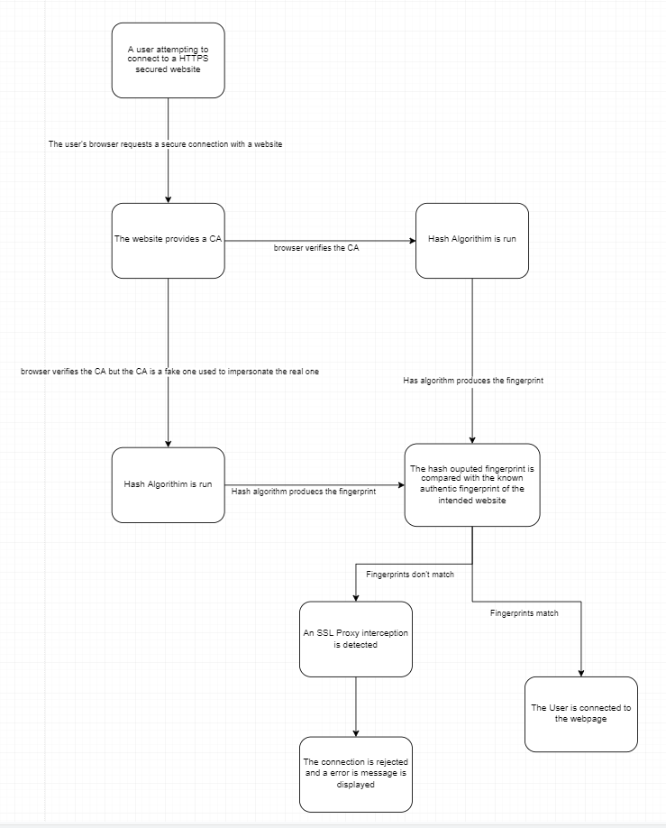

HTTPS connections are also known as SSL or TLS ("Secure Sockets Layer" and "Transport Layer Security"). It allows data connected using HTTPS to be sent back and forth over and encrypted by technology no one knows how to break. This also prevents people from copying websites and redirecting traffic to fake websites instead of the real ones. This is possible through entities called Certificate Authorities (CA) which is "A third party who we trust has assured us that our encrypted traffic is going only to the website we intend" (GRC, 2020). When a user's internet browser creates a secure connection with a website it has to provide the CA which the web browser needs to verify. These websites "prove their identity in the real physical world using incorporation documentation, Dun & Bradstreet records, their publicly known telephone numbers, and so forth" (GRC, 2020). The browser will verify the authenticity of the CA by ensuring the signature was one of the CAs it trusts from its long list of reputable CAs that exist.
This loss of visibility created by the increased use of the HTTPS secure connection created problems for private institutions — corporations, schools, and other organizations — because some of these institutions wanted to access the internet usage of the students and employees. These institutions developed and deployed new technology known as HTTPS Proxy Appliances. HTTPS Proxy Appliances allow institutions to "circumvent our most basic assumption and guarantee of Internet browser privacy and security" (GRC, 2020). Because institutions can't control exactly what they can and cannot see they decide to just see everything (GRC, 2020).
An SSL Proxy interception is when an SSL Proxy intercepts a connection to a website and "creates a fraudulent "spoofed" web server certificate" to impersonate the certificate of the intended remote website (GRC, 2020). It signs the fraudulent certificate itself by using a fraudulent CA that was already planted on the user's browser or computer (GRC,2020). The impersonation is so perfect, that it is not possible for the browser or the user to figure out that they don't have a securely encrypted connection to the intended remote website. Unfortunately, SSL interceptions can't be prevented, although it is possible to reliably detect these interceptions through the use of the hash algorithm. Cryptographic hashes are complex mathematical algorithms in which if just one tiny part of the certificate is changed, then "an average of half of the fingerprint's hash bits will change in response" (GRC, 2020). This means that when a hash is used to fingerprint a certificate any minuscule changes will alter the fingerprint resulting in a completely different fingerprint altogether. Since it is impossible for an SSL Proxy to duplicate a remote server's certificate exactly, the hash algorithm can be used to easily and reliably detect SSL Proxy interceptions. Below is a flowchart depicting how the hash algorithm compares an authentic fingerprint with another retrieved from a browser and how SSL proxy interceptions are detected and avoided.

A false-positive is when SSL proxy interceptions are mistakenly identified. This happens in larger websites that have multiple certificates, due to the ease of maintenance and obtaining them. This means when the fingerprints are compared they will be different and it will be detected as an SSL Proxy interception even though "they have simply received a different valid certificate than the one received and shown by this web page" (GRC, 2020). A false negative is the opposite of a false positive in which an SSL proxy interception occurs and it goes undetected.
A MITM is an acronym for Man in the Middle Attack. These attacks are when an attacker "intercepts communication between two parties either to secretly eavesdrop or modify traffic traveling between them" (Venafi, 2022). A MitM attack has someone virtually in the middle of a connection between 2 parties. This is done by interfering with actual legitimate networks or by creating fake networks. These attacks are so dangerous because they can be done through malicious Wifi hotspots which allow attackers to steal private information from the victim such as login credentials as well as force updates that install malware.
States have laws against eavesdropping on a private communication, although the laws are different under The Electronic Communications Privacy Act of 1986 for institutions eavesdropping on employee or student communication. It allows institutions to eavesdrop as long as the employee or student when the communication is on the company or school equipment (Legal, 2021). For the government, "all electronic surveillance in the United States is illegal unless it falls under one of a small number of precise exceptions specifically carved out in the law" meaning that sometimes they do have the right to intercept communications (NSA, 2006).
Arampatzis, A. (n.d.). What is a man-in-the-middle attack and why is it so dangerous? Venafi. Retrieved August 26, 2022,
from https://www.venafi.com/blog/why-are-man-middle-attacks-so-dangerous-venafi
Legal Information Institute. (n.d.). Eavesdropping. Legal Information Institute. Retrieved August 26, 2022,
from https://www.law.cornell.edu/wex/eavesdropping
NSA spying on Americans is illegal. American Civil Liberties Union. (2006, February 6). Retrieved August 26, 2022,
from https://www.aclu.org/other/nsa-spying-americans-illegal#:~:text=Fourth%20Amendment,
-The%20right%20of&text=Katz%20389%20US%20347)%20has,carved%20out%20in%20the%20law.
Steve Gibson, G. I. B. S. O. N. R. E. S. E. A. R. C. H. C. O. R. P. O. R. A. T. I. O. N. (n.d.). GRC : SSL TLS HTTPS web
server certificate fingerprints . GRC | SSL TLS HTTPS Web Server Certificate Fingerprints . Retrieved August 26, 2022,
from https://www.grc.com/fingerprints.htm#top